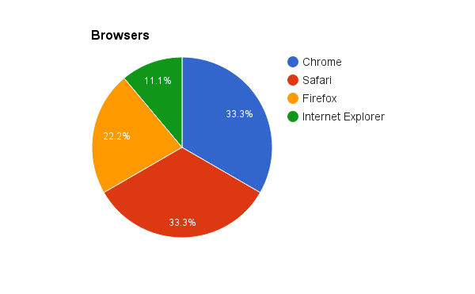

P4 Testing: snow4days
Marius Aarsnes, Jakob Westermoen, Sebastian Olafsson, Andreas Dørum, Thorben Dahl
Link to our website: http://org.ntnu.no/it2805snow4days/site/site.php/
1. Administrative details
Client Name: Snow4Days inc.
Website Name: snow4days
Contact Person: Mike Hawke
2. Testing document
Our testing document is divided into these following sections:
Info: This part of the document asked for personal information about the tester.
Tasks: This part gave the tester various task to complete. For testing the usability and design of the webpage. The tasks covered these topics: design, navigation, content, usability.
After the test: Finally we asked the testers to rate different aspects with the site and write comments, about things they experienced using the site.
You can read the form here.
3. Tester audience.
In order to receive the best possible feedback, we aimed to reach out to an audience which we believe covers our target audience. We also based the testing phase to live testing only, with us being present during the testing, as we believe that gives us an idea of how potential users react and interact with the website.
The test subjects were divided approximately 40/60 male/female and the average test age was people in their late teens, early 20s.
We also aimed to reach out to people not interested in the services provided by Snow4Days, to get their say on design and usability.
Most test subjects were students at NTNU as it is hard to reach out to people off campus. The line of study differs from test subject to test subject.
Graphics from personal info:
4. Testing platforms
The platform most used in the testing was Windows, with OS X not far behind.
We have not tested on phones and tablets due to time limitations, causing us not to focus as much on phone compatibility.
Chrome and Safari were the two most popular test browsers, although we also had some tests in Internet Explorer (edge and 8) and Firefox. All tests were done on the Eduroam internet provided by NTNU.

5. Feedback summary
Feedback from tasks:
- Find how to order a trip to Val Thorens in France.
- Find out how much a trip to St Anton would cost.
- Find the address for sending a postcard to the snow4 days company
- Find out where to call a representative
- Find out how many lifts there are on the ski resort in Aspen
- For how many years have snow4days been operating as a business?
All test subjects were able to solve all tasks successfully in a very timely manner. We received comments about the tasks being easy to understand and complete.
Feedback from grading and additional comments:
- Finding out what site to go to: 4.6
- Finding information on page: 4.8
- Navigating between subpages: 4.7
- Overall experience: 4.6
Navigation
Most people said that the website was easy to navigate. Many people did however complain about the navigation bar, which had a delay effect on mouseover and ended on mouseout. This confused some users, causing them to click the wrong item in the navbar.
Design
All test subjects were satisfied with the general layout of the page. We received good words on the chosen color scheme and background picture, because people generally thought it had relevance to the snow theme that were obvious when working with Snow4Days. We had no mentions on the font, meaning that the font we chose was a good fit when people don't notice anything wrong. We did however receive bad feedback regarding the Navbar delay effect, which was added via a JavaScript, as an annoying feature for both design and usability. The background colour of the navbar, for the locations: Val Thorens and so forth, did not get too good of a response from the testers and they thought that having the same background color for the whole navbar would be better.
Usability
Feedback for usability were generally good, except for the navbar issues. Because of the delay some minor complications arose such as the tester thinking that there was no dropdown, or they had to click on the navbar for the dropdown to appear. Another problem with the navbar was that on some testers screens, on the homepage, the navbar would be so far down that the dropdown would “disappear” down so that they would have to scroll down to see it properly.
Overall experience
The test scores and the feedback from the users indicate that the overall experience is good. We have had multiple comments on good design and color scheme and multiple comments on what we could have improved in the navbar. We even had one test subject saying:
“This is beautiful. I really like the frontpage. It makes me want to go snowboarding”
Graphic display of the test results:
(1 = very bad, 5 = very good)
6. Our response
We were happy with the response to our website, because we received concrete, helpful feedback on what we could have done better to improve the site. From small corrections like spelling or grammatical errors to performance issues like slow loading of images or delay in the navbar.
If we had more time doing this project, improving the navbar JavaScript would be the first priority. we would like to make the delay smoother. Instead of the delay making the dropdown pop up after a short while, we would like to change it so that the dropdown would appear straight away, but in a smooth manner, starting at the top and going down. Also changing the background colour to the same colour on the whole navbar is something we would do, to please the users.
We would also make a JavaScript that preloads the images on load especially on the country pages, improving the performance of the site. another option would be to downscale the images, atleast those that were a little big. The main complaints about loadtime on images were on the country-pages and a quick look at the images for these pages showed that they were a little bigger than the rest. We would also make the website support multiple languages to reach an even wider audience!
We hope to help the company in the future with updating the website, adding new features, and helping them get more clients. As more and more clients purchase from the company, we would like to expand into social networking by creating a Facebook, Twitter, and Instagram account so the users can follow and upload their own images and videos from the Snow4Days experience. This will lead others to discover the company through the clients sharing the pictures, therefore expanding business.
7. Self-reflection
Along working with and advancing in HTML, CSS, JavaScript, and PHP, 60% of the group learned the basics of using Git to work together on the same files. As this is not taught by the school, but is almost required when working on groups and when you enter the workforce, this is an invaluable, important, and necessary skill to learn.
We learned to work as a group to accomplish tasks, and for two of the group members, this was an introduction to group projects at a university level.
We learned the lessons of time management and balancing this project with other subjects and classes.
As we were a group of different year students, the older students had more experience and were therefore able to advance the project to a level that would have been difficult to achieve with only first-year students. The synergistic approach lead to an overall better product, along with the first-year students developing new and important skillsets (such as Git).